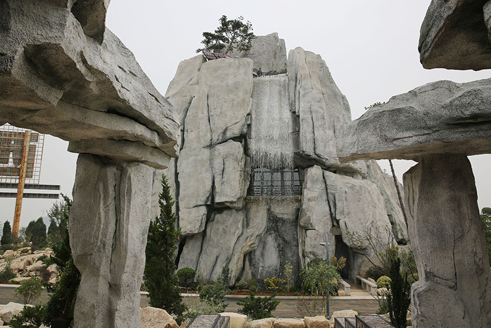

西安新植物园位于西安市南郊，南三环以南、绕城高速以北、长鸣路以西、公园南路以东，占地630亩，是老园区的两倍多。新园区独具三秦特色的秦岭园、丝绸之路园、华山岩石园、遗忘园、系统园、蔷薇园、百卉园、水景园、儿童园、本草园等11个专类园。
西安新植物园园区包括：丝绸之路园、秦岭园、儿童园、遗忘园、百卉园、水景园、蔷薇园、藤蔓园、系统园、展览温室等十一个一级专类园。
建设种子资源库、热带及亚热带展览温室、科普馆等现代化设施。实现植物园的数字化管理，新植物园建成后预计保存植物物种(含品种)1万种以上。
水是一切生物赖以生存的根本。
陕西省西安植物园水景园以展示水生植物多样性、水生态景观、水文化为宗旨，共保存水生植物种及品种500余种，包括“莲荷园”、“水生蔬菜区”和乡土水生植物区。通过水生植物多样性展示区、生活型展示区、水体净化示范区和水体景观区，让您在优美的景观中了解水生植物的多样性(物种和生活型)、观赏功能、食用功能、药用功能和生态功能。
百卉园以收集展示国内外丰富的著名观赏花卉为宗旨，包括牡丹芍药园、鸢尾园、萱草园，郁金香、菊花展示区、四季香园等，以牡丹芍药园为核心,拾级而上中心是众花簇拥的牡丹台，也是花心，周围牡丹花瓣形的设计突出“百花之王”的高贵气质。花色多彩的郁金香、类型繁多的鸢尾、品种丰富的萱草、造型百变的菊花依次开放，使四季花展内容丰富，形式多样，花开季节繁花似锦，芳香扑鼻，美不胜收。
儿童园由视觉园、触觉园和嗅觉园三个区域以及植物造型、涂鸦墙、科普柱、平衡器械、沙坑等设施构成，分别配置彩叶、叶质多样、芳香等奇特植物，使儿童在游玩中感知和认识奇妙的自然世界。
园区展示了铜钱树、陀螺果、葫芦枣等独具特色的植物;设置了“我的后花园”季节性种植活动区域;以“数字植物”贯穿整个园区，开展“看图找植物”活动;以“牛顿树”苹果讲述自然的神奇，激发儿童探索自然科学的兴趣;为儿童呈现一个 “寓教于乐”的乐园。
藤蔓园分为紫藤主展区、缠绕区、吸附区、卷须区、蔓生区五个分区。紫藤主展区：引种中国、欧洲、日本品系中的多花紫藤品种;缠绕植物区：以螺旋状缠绕他物向上生长的植物为主，如木通、金银花等;吸附植物区：依靠吸盘和气生根附着或穿透物体表面而攀援的植物，如地锦、凌霄、常春藤等;卷须植物区：依靠特化的攀援器官卷须进行攀附延展的植物，如葡萄、铁线莲等;蔓生植物区：通过栽培措施发挥其茎蔓生习性的植物，如藤本月季等。
秦岭横垣于陕西南部，是中国中部东西走向的最大山脉，自古有“华夏龙脉”之称，在地质、气候、水文、植物和动物地理上，是我国重要的五大自然分界线，全球25个生物多样性热点地区、中国14个生物多样性关键地区、地球同纬度上植物多样性最丰富的地区。
本园迁地保护的植物重点以秦岭地区分布的珍稀濒危植物、中国特有植物和秦岭特有种植物等为主，为开展生物多样性展示、植物迁地保护、科普教育、植物学教学实习及科学研究等活动提供了重要的场所。
丝绸之路园依照丝绸之路的历史，以植物为载体，营造一个讲述丝绸之路物种交换，文化交流，民族融合和历史变迁的主题园区。
丝绸之路园主要有蚕茧拱门、桑林、茶园、蔬菜园、月牙泉、丝绸古道、古城遗迹和万国花园等景观区域。植物栽植分为本土植物区、沙生植物区和外来植物区三个区块。本土植物区主要栽植中国传统的桑树、茶树和月季;沙生植物区主要栽植罗布麻、柽柳等沙生植物;外来植物区主要栽植经由丝绸之路传入我国的蔬菜、果树和花卉等。
遗忘园根据地质年代将志留纪、泥盆纪、石炭纪、二叠纪、三叠纪、侏罗纪、白垩纪、新生代等8个时期的已灭绝植物和同时代动物图像采用石阵的形式展示，使公众在植物园不仅能认识现有植物，也能了解植物进化的过程，激发公众对自然和历史的崇敬感。
岩石园 是以“华山西峰”景观为主体，模拟高山、岩生植物的生境，营造其适宜生长条件的植物专类园。占地面积约6000㎡，收集植物种类800多种。岩石园设置有旱生植物区、阴生植物区、碎石花园区、浅滩植物区等。
岩石园高差18米，岩石堆叠形式多样，营造花中有石，石中有花，花石结合的自然景观，以植株低矮，生长缓慢，开花繁茂，色彩绚丽的植物为主。形成独具地方特色、景观别致、植物种类丰富的精品园。
中草药是我国人民展示疾病的有力武器，为中华民族的繁衍生息和医疗保健做出了巨大贡献。本区根据药用植物的功能分为经典方剂区、道地药材区、有毒植物区、抗癌植物区、抗衰老植物区、药食同源区、易混淆药材区以及多部位入药植物区等展示单元，为药用植物种质资源保育、中医药研究、教学、实习以及宣传中医药文化提供了丰富的实物材料。
主要收集保存樱花、海棠、桃和月季等蔷薇科专类植物资源及著名观赏植物品种。在这里，春天樱花如雪、海棠如烟、桃红若霞，秋天枝果满桠 、百鸟聚集，是集种质资源保存、科普教育、生态观光、休闲娱乐等于一体的春花秋果园区。园内蜿蜒流淌的花溪、飘落的花瓣、丰富的品种，会让您有在“忽逢桃花林，夹岸数百步，中无杂树，芳草鲜美，落英缤纷，渔人甚异之”美景中流连忘返的体验。
植物多样性是人类赖以生存和发展的重要物质基础和生态环境基础，保护、持续利用植物多样性是我国农业及生物产业可持续发展的中心策略。本区在克朗奎斯特系统指导下，以秦巴山区及西北干旱半干旱地区的植物资源收集与迁地保护为核心，广泛收集、保育并展示我国温带与北亚热带的种子植物2000余种，成为了我国西北地区重要的植物资源迁地保护基地与物种库。
为了更好体现新园的科普功能，西安新植物园将在场馆里融入科技元素，能实现人与“植物”互动，让游客更直观了解植物的生长变化。